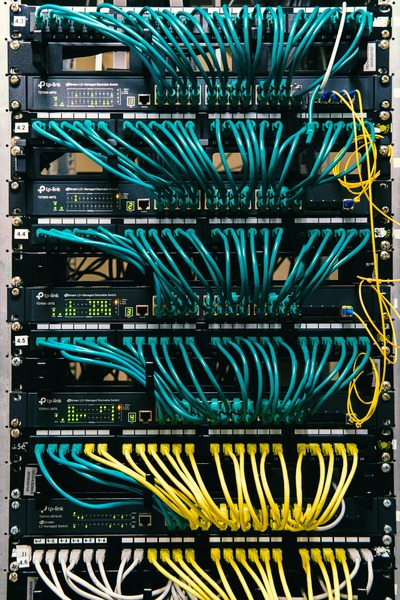
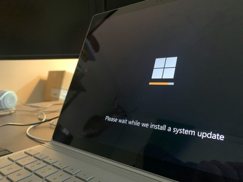

Phillip Lindo's Networking and Web Services
Hello I am Phillip Lindo, a skilled web
developer and network engineer.
with a passion for all aspects of information technology.
With years of experience in the industry, I offer
a wide range of services to help businesses establish a
strong online presence.
Whether you need a simple website or a complex network
topology design, I I
have the expertise to deliver high-quality solutions
tailored to your
specific needs. My services include web design, development,
Windows server maintence, network deployment
and ongoing support. I am committed to
providing
exceptional service and ensuring that your IT infrastructure
performs well. Contact me today to discuss how I
can
help you
achieve your IT goals!
Services
Network Configuration and Deployment

Me and my team have built serviced and modernized plenty
of
networks for small business all over the new jersey
area. We
have experience in configuring and deploying various
network
devices, including routers, switches, firewalls, and
wireless access points. Our team is skilled in designing
and
implementing secure and efficient network
infrastructures
that meet the specific needs of our clients.
Web Development and Design
I have extensive experience in creating responsive and
user-friendly websites using the latest web
technologies. My approach focuses on delivering
high-quality solutions that not only look great but also
provide an excellent user experience. Whether you need a
simple brochure site or a complex web application, I can
help you achieve your goals.
IT Consulting and Support

I offer comprehensive IT consulting services to help
businesses optimize their technology infrastructure. My
expertise includes Windows server administration, Citrix
environment management, Server and Wokstation deployment
and general IT support. I work
closely with clients to understand their unique needs
and
provide tailored solutions that enhance efficiency and
productivity.
Customer Reviews
John Doe ⭐ ⭐ ⭐ ⭐ ⭐
Phillip and his Team were professional and effecient.We
needed some one to reconfigure or network after our old
network
Contractor retired. Phillip was not only to provide
great service at a great cost but he was able to offer
certian levels of
protection that we never had experiecned.
Jane Doe ⭐ ⭐ ⭐ ⭐ ⭐
Phillip was attentive and considerate while making the
website for my new hair salon.He made booking and
learning new infor aboutmy business easy and enjoyable.
I love my new website and would recommend his services
to anyone in town.
Billy Bob ⭐ ⭐ ⭐ ⭐ ⭐
Phillip was able to successfully build install deploy
and configure our servers and computer hardwar. He
seamlessly Cut all of our new equipment over While
updating our operating systems. His work ethic is
unmatched and i would recommend him to anyone in need of
IT support.His Knowledge is cast and he will alwasy get
the job done right.